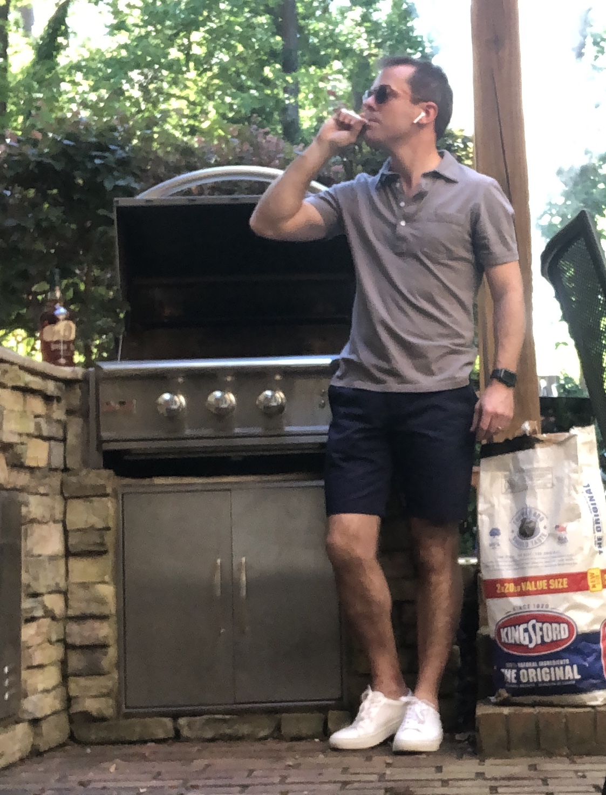

Saturday, March 20
12:15 pm - Georgetown at Colorado (Adam)
12:45 pm - UNC Greensboro at Florida St. (Rob, Bryan, Malatack)
1:15 pm - Eastern Washington at Kansas (Farach, Josh)
1:45 pm - St. Bonaventure at LSU (Josh)
3:00 pm - Texas Southern at Michigan (Alex, Adam, Lloyd)
3:30 pm - UCSB at Creighton (Lloyd)
4:00 pm - Iona at Alabama (Rob, Farach, Adam, Bryan)
4:30 pm - Drake at USC (Bryan)
6:25 pm - Grand Canyon at Iowa (Adam, Bryan, Lloyd)
7:10 pm - Maryland at Connecticut
7:15 pm - Ohio at Virginia (Alex, Rob)
7:25 pm - Missouri at Oklahoma
9:20 pm - Norfolk St. at Gonzaga (Alex, Farach, Adam, Malatack)
9:40 pm - UCLA at BYU (Alex)
9:50 pm - Abilene Christian at Texas (Alex, Rob, Malatack)
9:57 pm - VCU at Oregon (Rob)
Player Pool Trivia
Question 1: In 2019, Carsen Edwards shattered whose player pool record for most points in a four-game tournament?
Question 2: In how many seasons has the first overall pick been outscored by the 64th pick?
Question 3: Which player pool participant is most likely to have been among the January 6th insurrectionists?